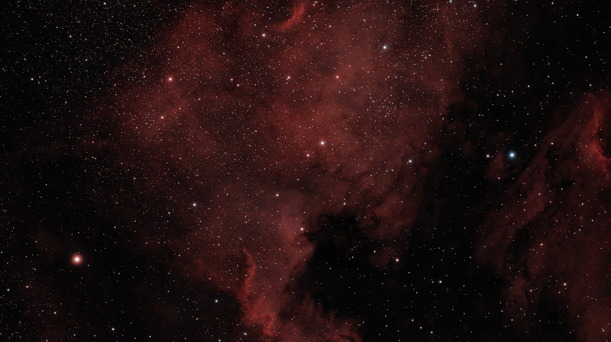
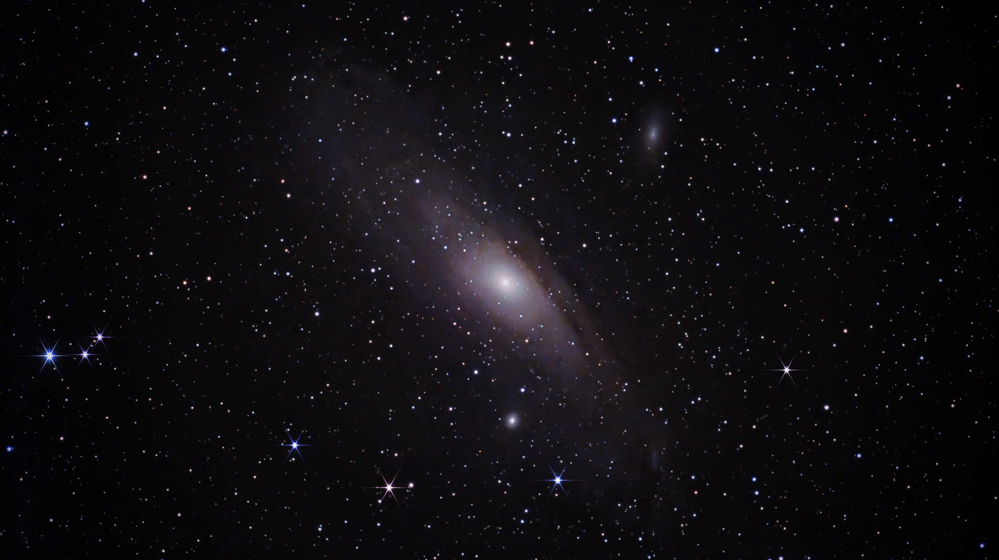
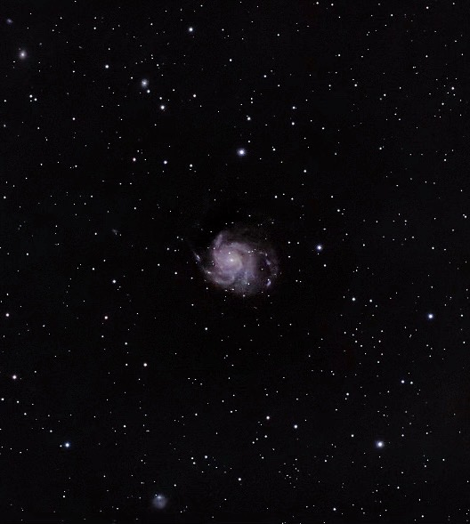

A personal collection
Nights spent
looking up.
A few small windows
into a very big universe.

View photographA vast cloud of gas and dust where new stars are forming, named for its resemblance to North America. The red glow comes from hydrogen gas energized by hot stars, while dark clouds of dust block parts of the light.

View photographOur Milky Way’s nearest large galactic neighbour, about 2.5 million light-years away, with a bright centre surrounded by a tilted disk of stars. Its light travelled for 2.5 million years to reach this photograph, so you’re seeing it as it was long before modern humans existed.

View photographA spiral galaxy seen almost face-on, revealing arms that curl around its bright centre, roughly 21 million light-years away. About eight times farther away than Andromeda, its light began travelling toward us millions of years before humans walked the Earth.